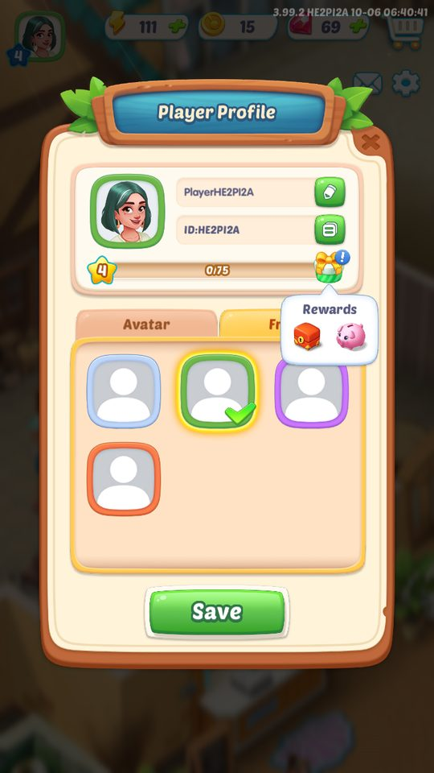
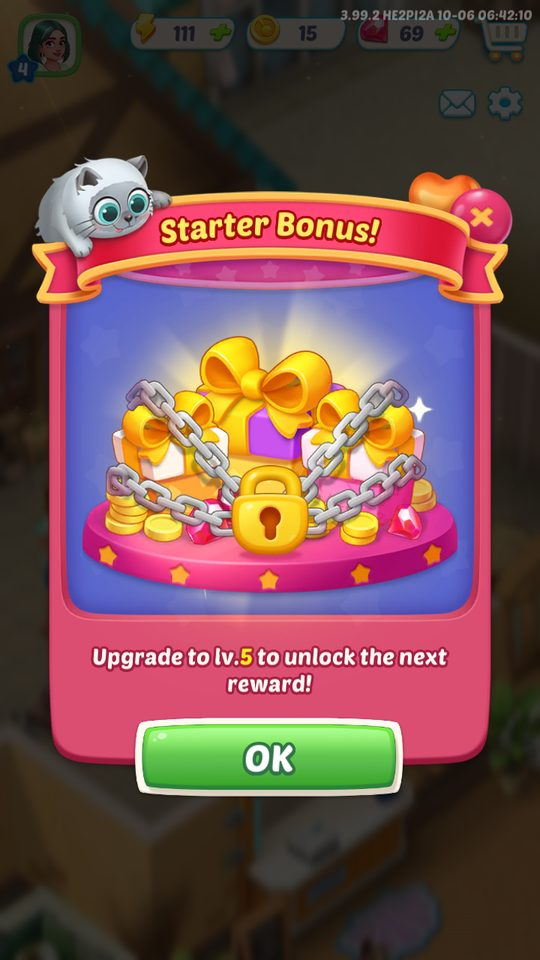
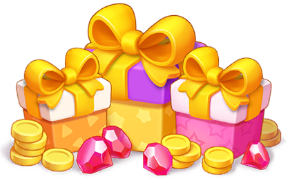
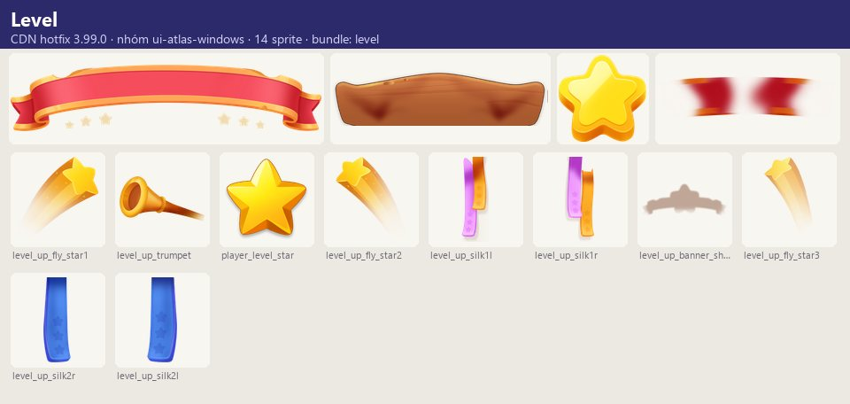

Ảnh chụp & tài nguyên
Cấp độ người chơi tăng khi tích đủ XP (kiếm từ giao đơn, hoàn thành nhiệm vụ, vật phẩm EXP).
Mô tả
- Cấp độ người chơi tăng khi tích đủ XP (kiếm từ giao đơn, hoàn thành nhiệm vụ, vật phẩm EXP).
- Mỗi cấp thưởng một gói phần thưởng và là điều kiện mở khóa phần lớn tính năng/sự kiện ('Unlocks at Level {0}').
- Quanh cấp độ có ba lớp monetization/retention: Starter Bonus (quà tân thủ theo mốc cấp hoặc số nhiệm vụ), Growth Fund (gói trả phí mở thưởng ở các mốc cấp, quảng bá theo % giá trị) và gói quà lên cấp.
Còn thiếu / chưa xác minh
Mở khóa & điểm vào
Có từ đầu. Khi đạt cấp tối đa của bản hiện tại hiển thị player_level_max_desc.
Điểm vào:
- Thanh/huy hiệu cấp trên HUD → LevelWindow
- Popup LevelUpWindow khi lên cấp
- Biểu tượng Starter Bonus (GrowthBenefitEntry)
- GrowthFundWindow trong cửa hàng/popup
Cách hoạt động
- XP tích lũy hiển thị trong LevelWindow ('Level up by collecting more XP.
- The next level will grant you:').
- Đủ XP → nút Level Up → LevelUpWindow liệt kê phần thưởng → Claim.
- Lên cấp mở các tính năng có điều kiện level (preview_open_level).
- Starter Bonus: chuỗi quà tân thủ, mỗi quà mở khi lên cấp {0} hoặc làm thêm {0} nhiệm vụ Chores; nhận quà bằng cách chạm liên tục để mở hộp.
- Growth Fund: mua một lần để kích hoạt; sau đó mỗi mốc cấp nhận thưởng; mốc chưa đạt hiện 'Advance to level {0}' / 'Insufficient level'; nếu chưa mua, bấm nhận sẽ hỏi 'Unlock Growth Fund'.
- Gói quà lên cấp (BundleLevelUpGiftWindow) chào bán sau khi lên cấp.
Luồng chi tiết theo code
XP tích lũy hiển thị trong LevelWindow ('Level up by collecting more XP. The next level will grant you:'). Đủ XP → nút Level Up → LevelUpWindow liệt kê phần thưởng → Claim. Lên cấp mở các tính năng có điều kiện level (preview_open_level). Starter Bonus: chuỗi quà tân thủ, mỗi quà mở khi lên cấp {0} hoặc làm thêm {0} nhiệm vụ Chores; nhận quà bằng cách chạm liên tục để mở hộp. Growth Fund: mua một lần để kích hoạt; sau đó mỗi mốc cấp nhận thưởng; mốc chưa đạt hiện 'Advance to level {0}' / 'Insufficient level'; nếu chưa mua, bấm nhận sẽ hỏi 'Unlock Growth Fund'. Gói quà lên cấp (BundleLevelUpGiftWindow) chào bán sau khi lên cấp.
Ảnh chụp & tài nguyên (6)
3 ảnh chụp trong game (BlueStacks/LDPlayer, tài khoản cấp 4); 2 ảnh tài nguyên trong APK; 1 bảng sprite trích từ bundle sự kiện trên CDN hotfix 3.99.0 (mỗi bảng là một chủ đề/biến thể; sprite rời, không phải màn hình đã dựng). Bấm ảnh để phóng to; nhãn UC dẫn tới use case tương ứng.










Phần thưởng
Phần thưởng theo code
| Ngữ cảnh | Phần thưởng | Evidence |
|---|---|---|
| Mỗi cấp | Gói thưởng cấp (giá trị server) | player_level_desc |
Số liệu chính
| Chỉ số | Giá trị | Nguồn |
|---|---|---|
| Cấp người chơi lưu cho C# | 1 (tài khoản mới) | LevelForCSharp — PlayerPrefs |
| XP cần để lên cấp 5 | 0/75 | XP cấp 4 — screens/manifest.json |
| Starter Bonus | Quà kế tiếp mở ở lv.5 | Starter Bonus — screens/manifest.json |
Use case (5)
Bấm vào từng use case để mở. Mở/đóng tất cả
UC-01 Lên cấp
Các bước- Bấm Level Up
- LevelUpWindow hiện phần thưởng
- Claim
| Actor | Player |
|---|---|
| Trigger | Đủ XP |
| Điều kiện | Chưa đạt cấp tối đa |
| Kết quả | Cấp +1, nhận thưởng, mở tính năng theo cấp |
| Quy tắc / số liệu | Cấp tối đa → player_level_max_desc |
| Evidence | text player_level_*, level_up_*; prefab LevelUpWindow, LevelWindow; log BlueStacks LevelUpWindow×3 |
UC-02 Starter Bonus
Các bước- Biểu tượng Starter Bonus báo mốc tiếp theo
- Đạt lv.{0} hoặc làm thêm {0} Chores
- Mở quà (chạm liên tục)
| Actor | Player |
|---|---|
| Trigger | Đạt mốc |
| Điều kiện | Trong giai đoạn tân thủ |
| Kết quả | Nhận quà tân thủ |
| Quy tắc / số liệu | Hai loại điều kiện: cấp hoặc số nhiệm vụ |
| Evidence | text growth_benefit_*; prefab GrowthBenefitEntry, GrowthBenefitNoticfationWindow, GrowthBenefitRewardWindow (mỗi cái ×3 khi chơi thật) |
UC-03 Mua Growth Fund
Các bước- Xem '{0}% Value!'
- Mua (IAP)
- Trạng thái 'Activated'
| Actor | Player |
|---|---|
| Trigger | Mở GrowthFundWindow |
| Điều kiện | — |
| Kết quả | Mở nhận thưởng theo mốc cấp |
| Quy tắc / số liệu | Chưa mua mà bấm nhận → hộp thoại 'Unlock Growth Fund' |
| Evidence | text growthfund_*; prefab Bundle/GrowthFundWindow |
UC-04 Nhận thưởng Growth Fund theo mốc
Các bước- Mốc đạt → Claim
- Mốc chưa đạt: 'Advance to level {0}'
| Actor | Player |
|---|---|
| Trigger | Đạt cấp mốc |
| Điều kiện | Đã mua |
| Kết quả | Nhận thưởng |
| Quy tắc / số liệu | — |
| Evidence | text growthfund_goods_window_need_tip1/2 |
UC-05 Gói quà lên cấp
Các bước- Popup BundleLevelUpGiftWindow
- Mua hoặc đóng
| Actor | Player |
|---|---|
| Trigger | Sau khi lên cấp |
| Điều kiện | Ưu đãi khả dụng |
| Kết quả | Gói IAP |
| Quy tắc / số liệu | — |
| Evidence | prefab Prefabs/Window/Bundle/BundleLevelUpGiftWindow |
Cấu hình (6)
Gộp mọi nguồn: const trong code, JSON mặc định trong Resources, bảng static, storage key, AB test, cờ server.
| Nguồn | Key | Kiểu | Giá trị | Ý nghĩa | Nơi định nghĩa |
|---|---|---|---|---|---|
| storage key | LevelForCSharp | int | 1 (tài khoản mới) | Cấp người chơi lưu cho C# | PlayerPrefs |
| storage key | user, userProfile | table | — | Cấp/XP và hồ sơ | CSDL SQLCipher |
| asset | Nguồn XP | list | Giao đơn, nhiệm vụ, vật phẩm item_s_exp_* (10 biến thể) | game_text | |
| runtime (ảnh chụp BlueStacks 06/10/2026) | XP cấp 4 | 0/75 | XP cần để lên cấp 5 | screens/manifest.json | |
| runtime (ảnh chụp BlueStacks 06/10/2026) | Starter Bonus | Quà kế tiếp mở ở lv.5 | screens/manifest.json | ||
| runtime (ảnh chụp BlueStacks 06/10/2026) | Thưởng cấp 5 | Rương đỏ + heo đất | Tooltip quà cấp | screens/manifest.json |
Giao diện (UI)
| Element | Class | Mục đích |
|---|---|---|
| Cấp | Prefabs/Window/LevelWindow | Tiến độ XP và thưởng cấp kế |
| Lên cấp | Prefabs/Window/LevelUpWindow | Nhận thưởng |
| Starter Bonus | Prefabs/Window/GrowthBenefit/* | Quà tân thủ |
| Growth Fund | Prefabs/Window/Bundle/GrowthFundWindow | Quỹ tăng trưởng |
Storage keys
LevelForCSharp user userProfile
Chưa đọc được / ghi chú
- Bảng XP theo cấp, cấp tối đa, phần thưởng từng cấp, giá Growth Fund và % giá trị nằm trong Lua/CSDL/server
Tính năng liên quan
Đơn hàng & khách Nhiệm vụ cốt truyện Cửa hàng & IAP Gói ưu đãi Khung sự kiện chung
Nguồn đã đọc
- notes/packs/PlayerLevel.md
- appendix/runtime.md
- screens/manifest.json (ảnh chụp)